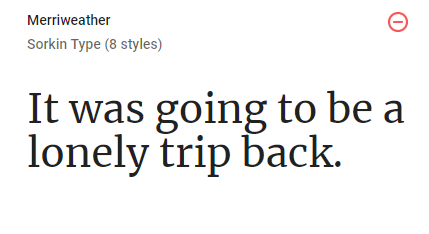
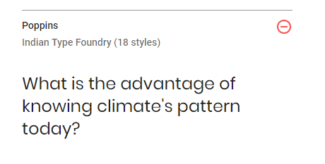

Typography
I choose Merriweather font because it is a free and an open-source serif typeface, it’s a clear font and it’s pleasing to read. It render well at various sizes and highly-readable on screens.
I choose Poppins sans serif typefaces because it is one of the popular design tool for building websites.